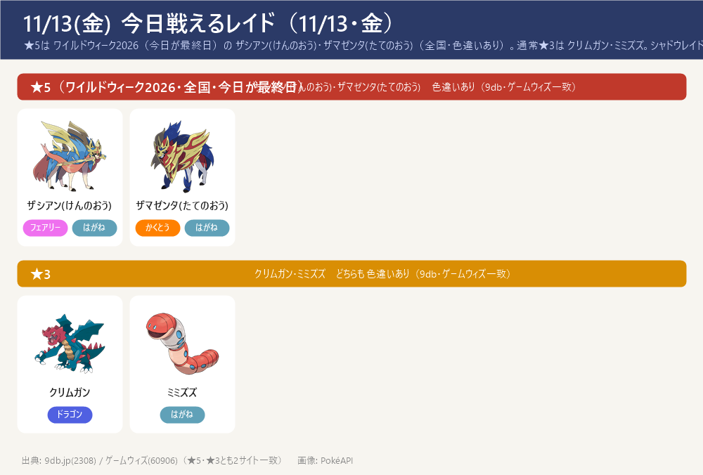
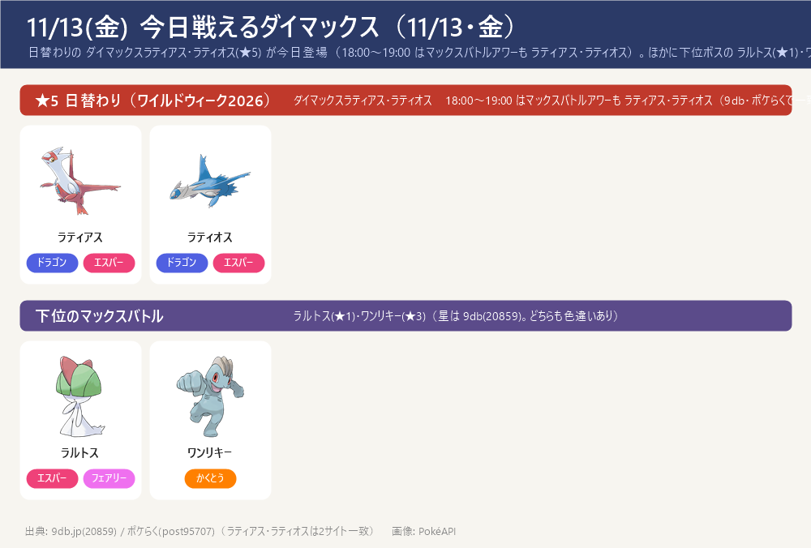
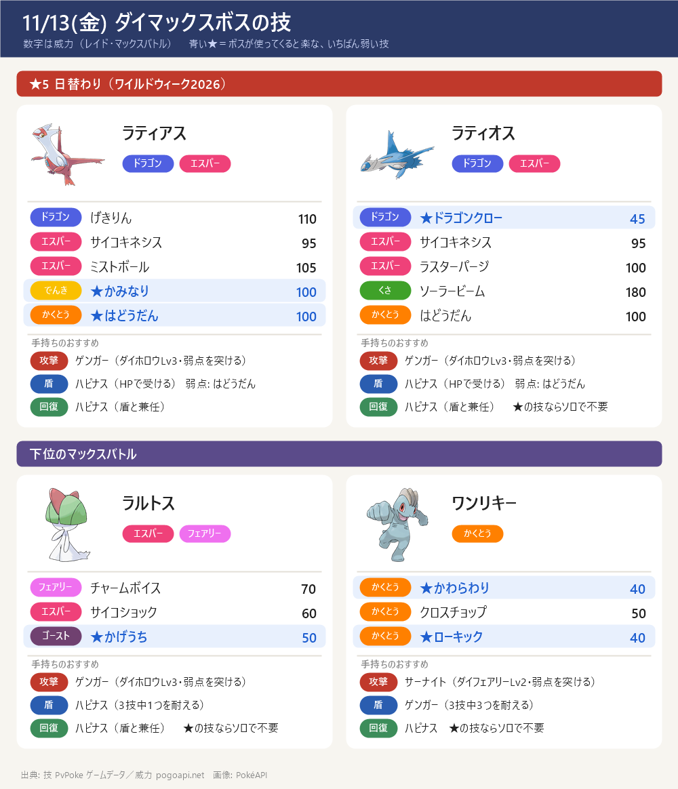

今日のポイント
- 明日 11/14 はディアルガ戦：MPを1,500にしておく（今日はMPを使わない。4人の仲間集めも今日のうちに）
- 【今日20:00まで】ワイルドエリア Into the Wild 終了。ザマゼンタを王の姿にする ★5 レイドは今日が最終日 → まだなら今日中に。GOパスのポイント獲得は 11/15(日)18:00 まで
- 「ワイルドウィーク2026」は今日 11/13(金) 20:00 で終了。全国の★5レイド ザシアン(けんのおう)・ザマゼンタ(たてのおう)（どちらも色違いあり）と、ワイルドエリアの育成イベントは今日が最終日
- 今日の日替わりマックスバトル：11/13(金) は ダイマックスラティアス・ラティオス(★5)。18:00〜19:00 はマックスバトルアワー（ラティアス・ラティオス）。どちらも色違いあり
- GOパス：ワイルドウィーク2026 のポイント獲得は 11/15(日) 18:00 まで。報酬の ぎんのおうかん（ザシアンの攻撃特訓用）はクリアして確保
- 通常★3に クリムガン・ミミズズ が登場（どちらも色違いあり・9db とゲームウィズで一致）
- 今日(金)はスポットライトアワーなし（9db・攻略大百科で一致）。シャドウレイドも今週（11/9〜11/15）はお休み（11/16(月)以降に再開見込み）
今日戦えるレイド（11/13・金）
★5は ワイルドウィーク2026（今日が最終日）の ザシアン(けんのおう)・ザマゼンタ(たてのおう)（全国・色違いあり）。通常★3は クリムガン・ミミズズ。シャドウレイドは今週お休み
- ★5 ザシアン(けんのおう)・ザマゼンタ(たてのおう)は ワイルドウィーク2026（11/9〜11/13）で全国の通常★5レイドに登場。どちらも色違いあり。今日 11/13(金) 20:00 でイベント終了なので、王の姿にするレイドは今日が最終日
- 通常★3 クリムガン・ミミズズはどちらも色違いあり（9db・ゲームウィズで一致）。9db(2308) は週の対象として他のポケモンも載せるが、ゲームウィズ(60906)は クリムガン・ミミズズ のみ → 一致した2体だけ採用
- シャドウレイドは今週（11/9〜11/15）は開催されていない（ワイルドウィーク期間中）。9db(2308) は トルネロス(けしん) をシャドウ枠で載せているが、ゲームウィズ(60906)に無く、週としてお休み中 → 今回は載せず。通常★1・メガはゲームウィズが「出現なし」→ 2サイトで一致せず今回は載せず。ゲーム内で確認を

今日戦えるダイマックス（11/13・金）
日替わりの ダイマックスラティアス・ラティオス(★5) が今日登場（18:00〜19:00 はマックスバトルアワーも ラティアス・ラティオス）。ほかに下位ボスの ラルトス(★1)・ワンリキー(★3)
- 今日 11/13(金) の日替わりマックスバトルは ダイマックスラティアス・ラティオス(★5)。18:00〜19:00 の マックスバトルアワー も ラティアス・ラティオス。明日 11/14 ディアルガ・11/15 パルキアに備えて、今日はマックス粒子（上限1,500）を使わずにためておく
- ワイルドウィークの日替わりマックスバトルはこの先 11/14(土) ダイマックスディアルガ（全国・この日限定） ／ 11/15(日) ダイマックスパルキア（全国）。カイリキー(カウンター)などの対策とマックス粒子1,500を用意
- 【各ボスのスペシャルアタック候補】（下のカード。数字はレイド・マックスバトルでの威力。★＝ボスが使ってくると楽な、いちばん弱い技（ボスと同じタイプの技は1.2倍で計算。こちらのポケモンとの相性は見ていない）。戦闘中に技名が出たら受け役を合わせる）


サカキ対策（シャドウゼクロム）：攻略ページへ（別ページ）
締め切り・やること：まとめページへ（別ページ）
この先の予定（タップで開閉）
- 11/14(土) ダイマックスディアルガ（全国・この日限定） ／ 11/15(日) ダイマックスパルキア（全国）。あわせて 11/14〜11/15 は「GOワイルドエリア：グローバル2026」。カイリキー(カウンター)などの対策ポケモンと、マックス粒子1,500を用意しておく
- 11/15(日) 18:00 まで GOパス：ワイルドウィーク2026 のポイント獲得（ぎんのおうかんの確保）
- 11/16(月) 10:00〜11/23(月) 20:00 「大きな足跡」イベント。11/16(月)以降 シャドウレイド再開の見込み
- 11/18(水) 18:00〜19:00 レイドアワー：クレセリア・ダークライ
- 11/19(木) 18:00〜19:00 スポットライトアワー：サルノリ・ヒバニー・メッソン（捕まえるとアメ2倍）
- 11/21(土) 11:00〜14:00 「ムゲンダイナ再来」イベント ／ 14:00〜17:00 コマタナ コミュニティデイ
サイトで違っていた点（タップで開閉）
- 通常★3：9db(2308) は週の対象として複数のポケモン（イノムー・ポッタイシ・ニョロゾ等）も載せるが、ゲームウィズ(60906)は クリムガン・ミミズズ のみ → 2サイト一致の クリムガン・ミミズズ を採用。他は載せず（ゲーム内で確認を）
- 通常★1・メガレイド：ゲームウィズ(60906)は「出現なし」、9db(2308)は週プール／シャドウ属性のみ → 2サイトで一致せず載せず
- シャドウレイド：今週（11/9〜11/15）はお休み。9db(2308) は トルネロス(けしん) をシャドウ枠で載せるが、ゲームウィズに無く週としてお休み中 → 載せず（11/16(月)以降に再開見込み）
- スポットライトアワー：11/13(金)は開催なし（9db 4351 に 11/13 の記載なし・攻略大百科 77843 にも金曜の記載なし の2サイトで一致）。18:00〜19:00 はマックスバトルアワー（ラティアス・ラティオス）
- マックスバトル下位ボスの星：ラルトス★1・ワンリキー★3 は 9db(20859)。ポケらく(post95707)は下位ボスの星を明記せず（主役の ラティアス・ラティオス は2サイト一致）。ゲーム内で確認を
- ダイマックスボスの技候補はゲームデータ(PvPoke)から（おんがえし・やつあたりは除外）、威力は pogoapi.net
出典: pokemongo-raku.com（マックスバトル post95707）／9db.jp/pokemongo（レイド2308・マックス20859・イベント4351）／pokemongo.gamewith.jp（レイド60906）／pokemon.gamepedia.jp/go（イベント77843）／pvpoke.com ゲームデータ（技候補）
画像: PokéAPI ／ 2サイト以上で一致した情報だけを載せています